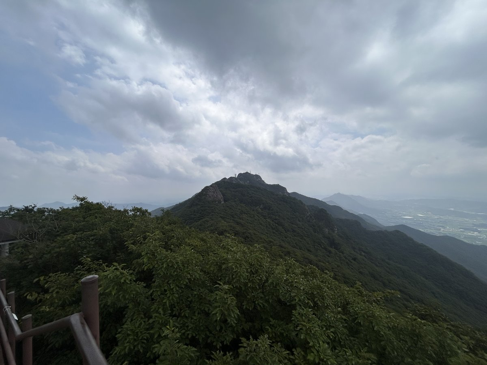
계룡산은 높이만 보면 만만해 보이지만, 실제 산행의 성격은 '능선 종주'에 가깝습니다. 동학사에서 올라 남매탑과 삼불봉을 거쳐 자연성릉을 타고 관음봉으로 넘어가는 코스가 계룡산의 정수입니다.
자연성릉은 삼불봉과 관음봉 사이의 바위 능선으로, 성벽처럼 이어진 등줄기를 444개의 계단으로 넘어갑니다. 가장 힘들고 가장 노출된 구간이면서 동시에 계룡산에서 가장 아름다운 구간입니다.
대전·세종·청주에서 한 시간 안에 닿는 접근성 덕분에 사계절 사람이 많습니다. 초보자는 동학사에서 짧게 왕복하고, 여유가 있다면 갑사나 신원사까지 넘어가는 종주로 확장하는 식으로 조절하면 됩니다.
등반기록
탐방안내소 → 세진정 → 상원암(남매탑) → 삼불봉 → 관음봉 → 은선폭포 → 세진정 원점회귀
동학사 탐방안내소에서 출발
토요일 아침 8시 19분, 동학사 탐방안내소에서 산행을 시작했습니다. 동학사까지는 포장된 길이라 편하게 걸어갈 수 있더군요.
코스는 세진정에서 상원암(남매탑)으로 올라 삼불봉과 자연성릉을 지나 관음봉에 오르고, 은선폭포 쪽으로 내려와 다시 세진정으로 돌아오는 원점회귀로 잡았습니다.
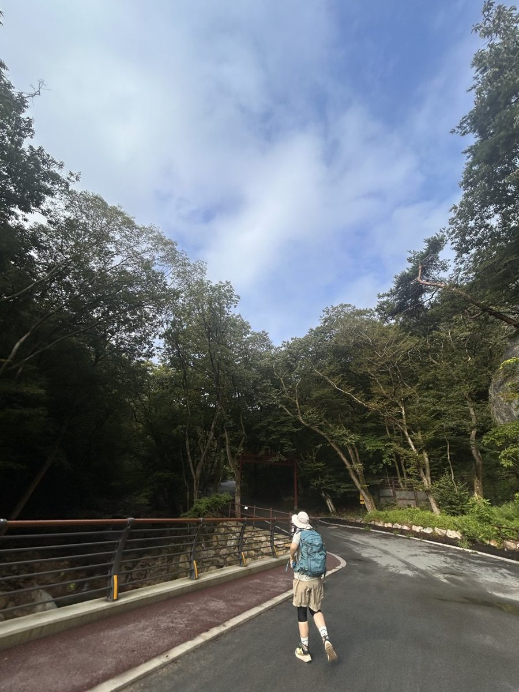
상원암(남매탑)까지의 오르막
세진정을 지나면 본격적인 오르막이 시작되는데, 돌이 깔린 너덜길이 상원암까지 꽤 길게 이어집니다.
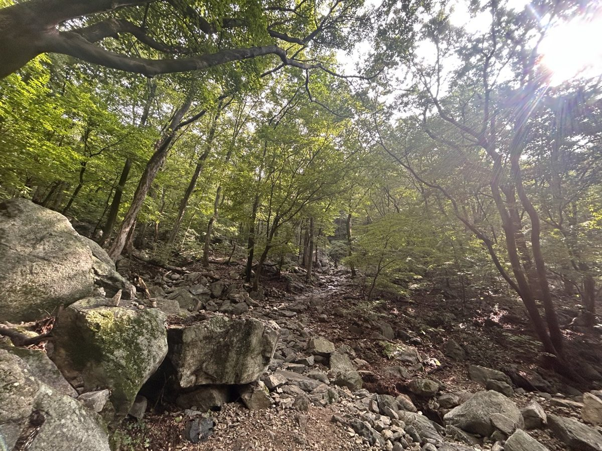
삼불봉에서 바라본 풍경
남매탑을 지나 10시 30분쯤 삼불봉에 올랐습니다. 구름이 능선 위에 걸려 있었는데도 사방으로 시야가 탁 트이더군요.
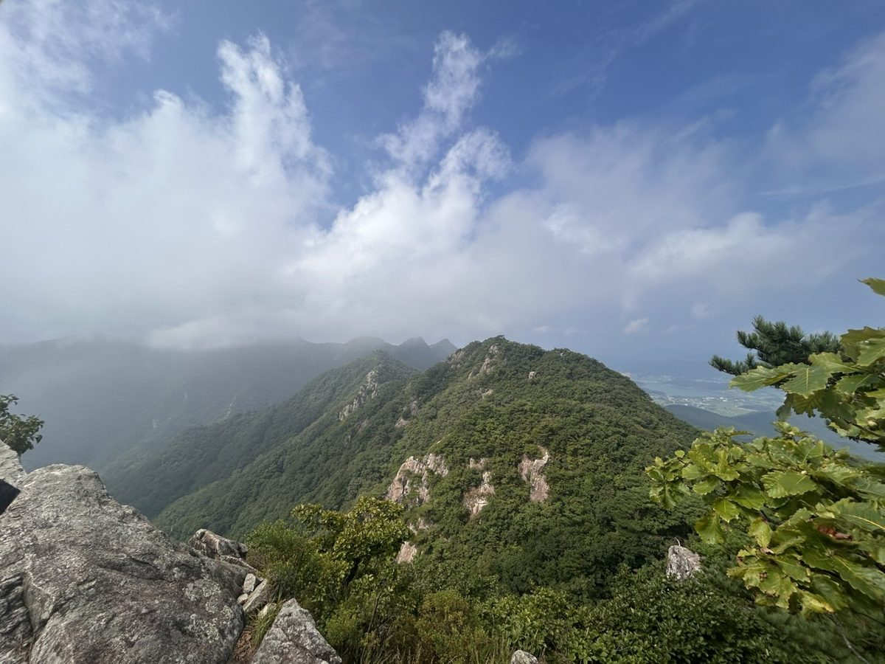
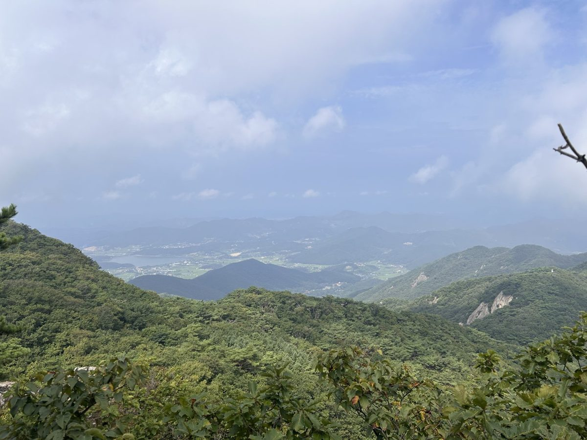
자연성릉을 따라 관음봉으로
삼불봉에서 관음봉까지는 계룡산의 하이라이트인 자연성릉입니다. 바위 능선을 따라 난간과 계단이 이어지고, 걷는 내내 양옆으로 풍경이 펼쳐지는 데다 멀리 천황봉까지 보여 눈이 즐거운 구간이었네요.
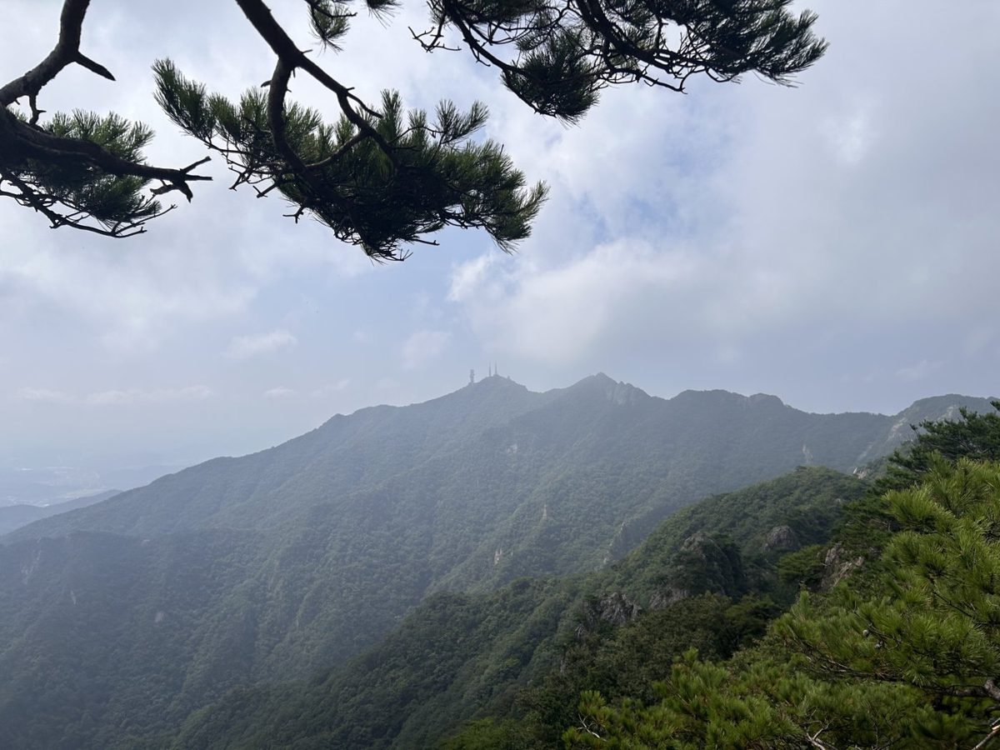
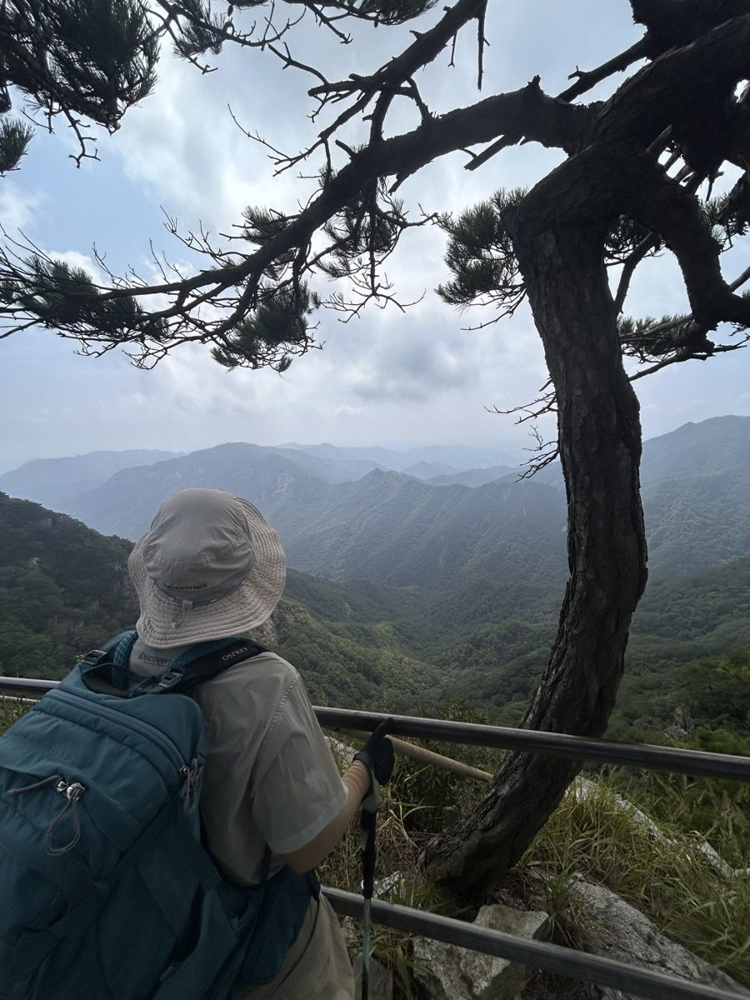
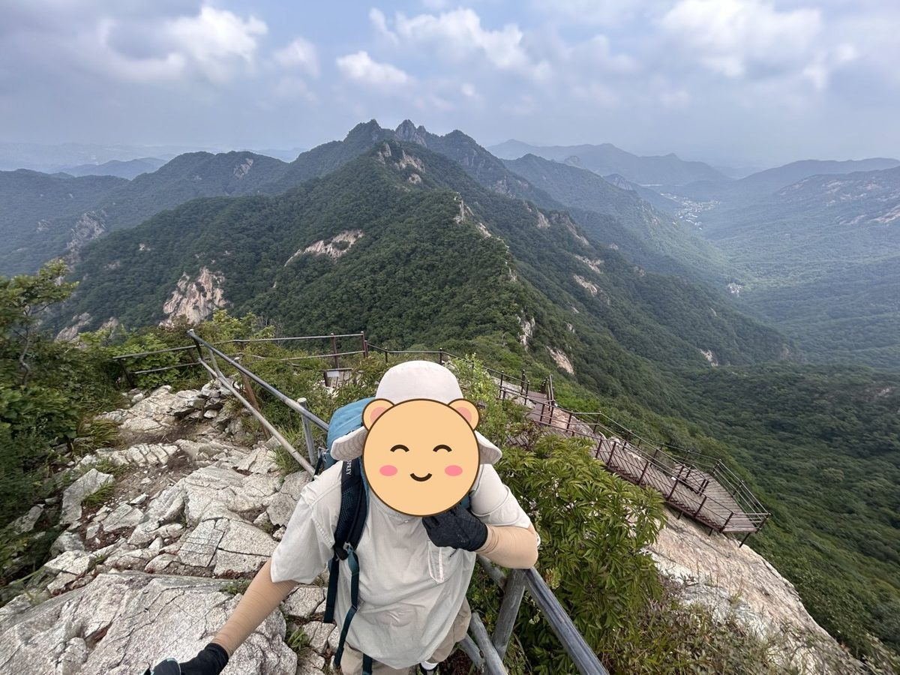
관음봉 정상, 766m
12시쯤 관음봉 정상에 도착해 정상석 앞에서 인증샷을 남겼습니다. 계룡산 최고봉인 천황봉은 출입이 통제돼 있어 인증은 관음봉에서 합니다.
하산은 은선폭포 방향으로 내려와 세진정을 거쳐 탐방안내소로 돌아왔고, 총 12.4km, 6시간 22분이 걸렸습니다.
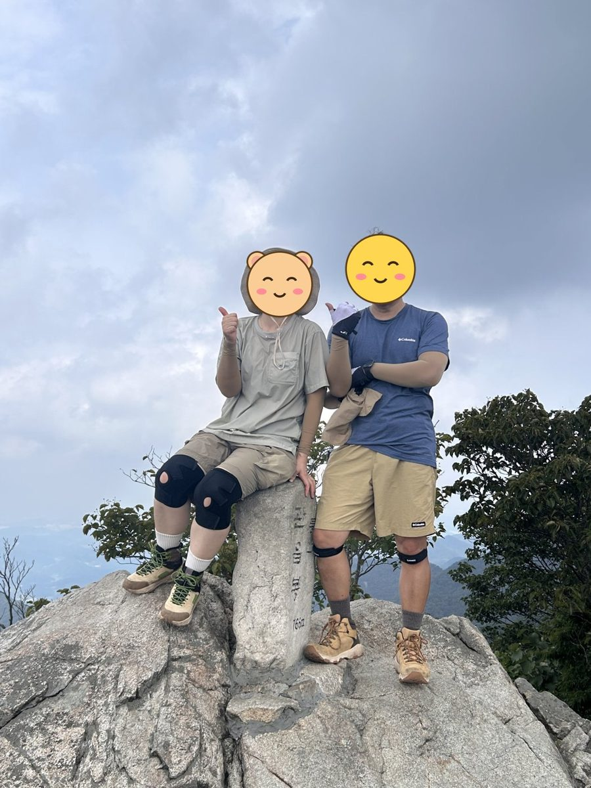
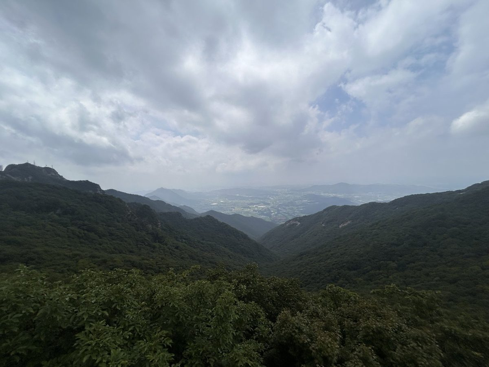
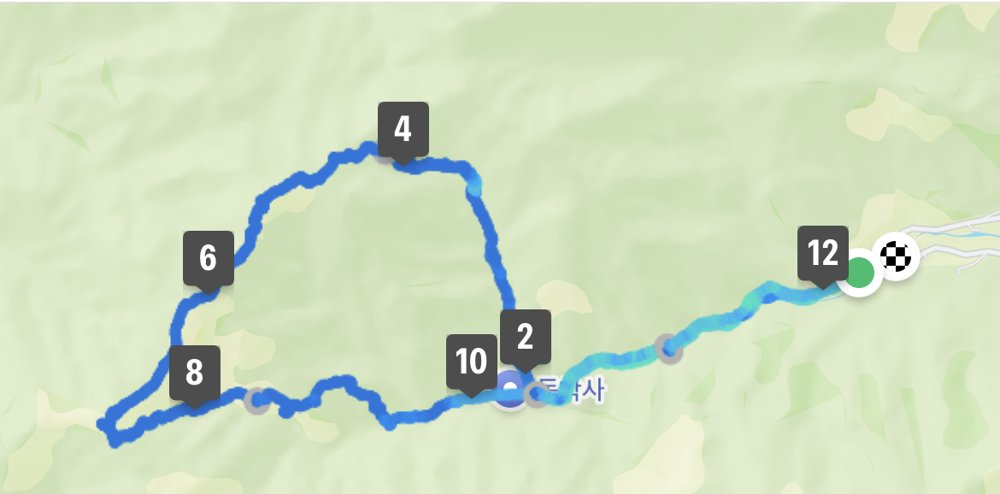
다음에 갈 사람을 위한 팁
- 삼불봉과 관음봉 사이 자연성릉은 바위와 계단이 계속 이어져 거리보다 시간이 더 걸리니, 여유 있게 잡는 게 좋습니다.
- 상원암(남매탑)까지 돌길 오르막이 길어서 스틱이랑 무릎 보호대가 있으면 한결 편합니다.
- 천황봉은 출입 통제 구역이라 인증은 관음봉 정상석에서 합니다.
- 원점회귀 12.4km, 고도 상승 823m로 하루 산행치고는 긴 편이라 아침 일찍 출발하시길 권합니다.
높이가 그리 높지 않아서 아내랑 저는 그렇게 힘들지 않을 거라 생각했는데, 의외로 꽤 힘들었습니다. 저희가 고른 코스가 난이도가 좀 있더라고요. 봉우리도 생각보다 많아서, 다음에 올 때는 새로운 코스에 도전해 보고 싶네요.
이 산의 포인트
- 자연성릉 — 444계단의 바위 능선, 계룡산 최고의 조망 구간
- 남매탑(청량사지 쌍탑) — 코스 중간의 상징적 지점
- 동학사·갑사·신원사 세 절을 잇는 종주 구성이 가능
- 국립공원치고 접근성이 좋아 당일 산행에 적합
등산 코스
| 코스 | 거리 | 소요 | 난이도 |
|---|---|---|---|
| 동학사 왕복 (입문) 동학사 주차장 → 동학사 → 은선폭포 갈림길 → 관음봉 전 전망지 → 원점 |
5~6km(왕복) | 2시간 30분~3시간 30분 | 하 |
| 갑사 코스 (최단) 갑사 주차장 → 금잔디고개 방면 → 능선 |
약 5km | 2시간 30분 | 하 |
| 동학사 → 자연성릉 → 신원사 종주 동학사 → 큰배재 → 남매탑 → 삼불봉 → 자연성릉 → 관음봉 → 연천봉고개 → 고왕암 → 신원사 |
약 10km | 4시간 5분 내외 | 중 |
인증장소
관음봉 정상부에서 인증하는 것이 일반적입니다. 계룡산 최고봉인 천황봉은 군사시설로 출입이 통제되어 오를 수 없습니다.
가는 길
- 자가용
- 동학사·갑사·신원사 각각 주차장이 있습니다. 종주로 걸을 경우 날머리에서 들머리로 돌아오는 버스·택시 시간을 먼저 확인하세요.
- 대중교통
- 대전 유성 방면에서 동학사행 시내버스가 자주 다닙니다. 갑사·신원사 방면은 공주 시내버스를 이용합니다.
주차장
- 동학사 주차장충남 공주시 반포면 학봉리
관음봉·자연성릉 코스의 대표 들머리입니다. 상가지구를 지나 안쪽까지 여러 구역으로 나뉘어 있습니다.
- 갑사 주차장충남 공주시 계룡면 중장리
갑사~금잔디고개 코스. 동학사보다 한산합니다.
- 신원사 주차장충남 공주시 계룡면 양화리
연천봉으로 바로 붙는 코스입니다.
주차 요금과 면수는 자주 바뀌고 성수기에는 임시 주차장·셔틀이 운영되기도 합니다. 출발 전에 지도 앱이나 공원 사무소로 한 번 더 확인하세요.
맛집
공주는 밤과 알밤한우로 알려져 있고, 동학사 입구는 산채정식과 해물파전·도토리묵을 내는 상가가 길게 이어집니다. 하산 후 파전에 동동주를 곁들이는 것이 이 동네의 오랜 방식입니다.
- 이뭐꼬들머리에서 2.9km충청남도 공주시 계룡대로 1407
- 마세오른들머리에서 5.7km충청남도 공주시 반포면 정광터1길 98-20
- 더함뜰들머리에서 6.8km대전광역시 유성구 동서대로 181 (덕명동)
- 도덕봉가든들머리에서 2.8km충청남도 공주시 반포면 동학사1로 159
- 신미가 짬뽕들머리에서 3.0km충청남도 공주시 동학사1로 139
한국관광공사에 등록된 음식점입니다. 맛집 순위가 아니며, 영업시간과 휴무일은 바뀔 수 있으니 먼 길이라면 미리 전화해 보세요.
언제 가면 좋은가
봄 벚꽃(동학사 진입로)과 가을 단풍이 특히 유명합니다. 자연성릉은 노출된 바위 능선이라 겨울 결빙기와 여름 뇌우 시 위험하며, 강풍이 부는 날에는 우회 코스를 택하는 편이 좋습니다.
알아두면 좋은 것
- 자연성릉 계단 구간은 피할 수 없는 오르내림이 반복됩니다. 무릎이 약하면 스틱을 권합니다.
- 천황봉은 통제 구역입니다. 정상 표기를 관음봉 기준으로 계획하세요.
- 종주 시 날머리를 신원사로 잡으면 하산 후 대중교통이 비교적 수월합니다.
- 동학사 입구는 상가와 식당이 잘 갖춰져 있어 하산 후 정리하기 편합니다.